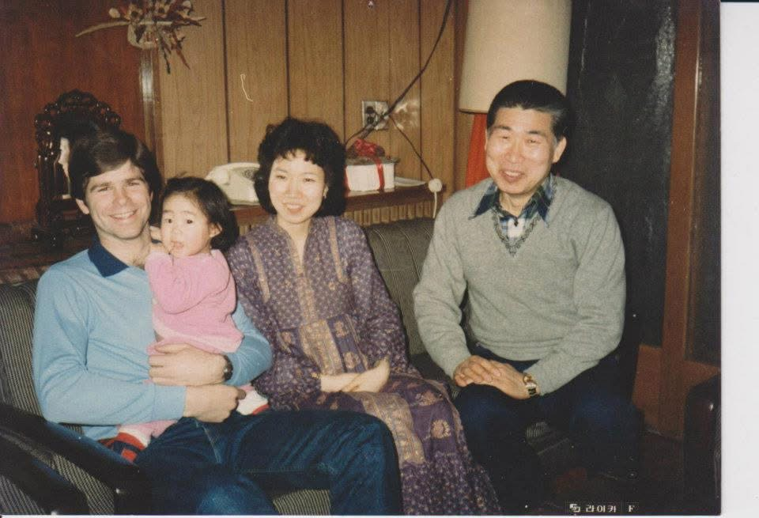
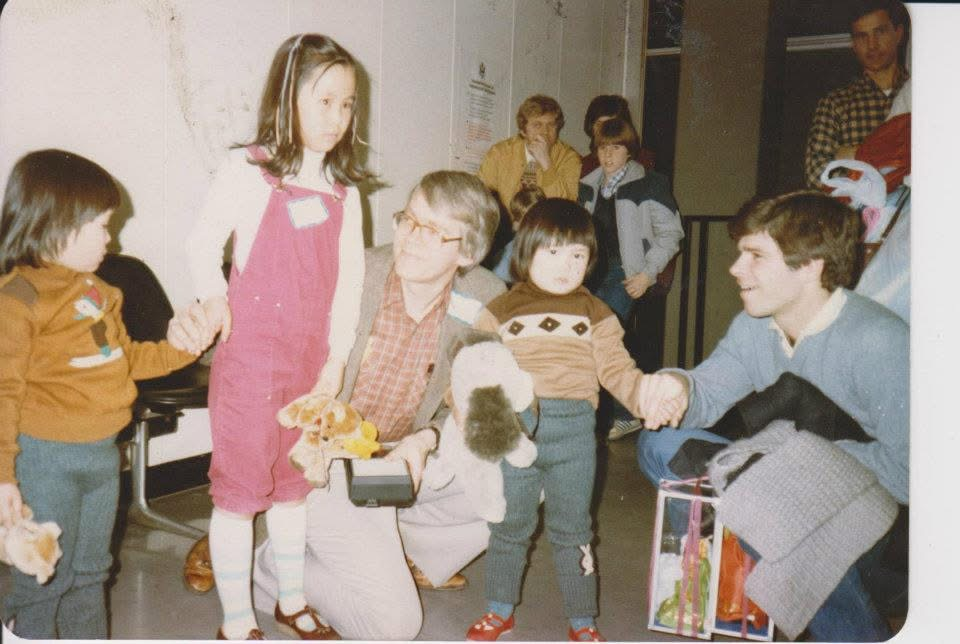
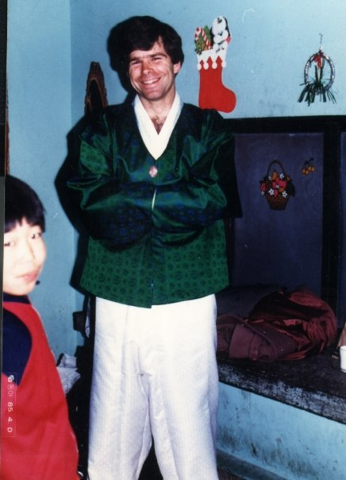
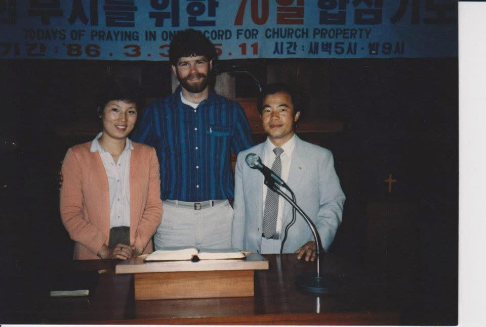
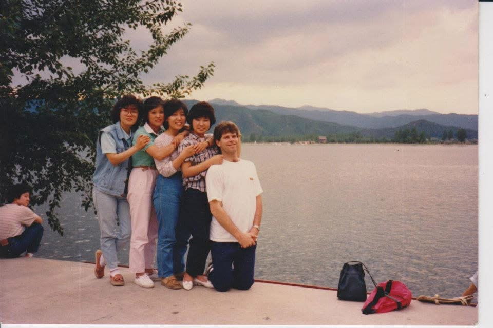
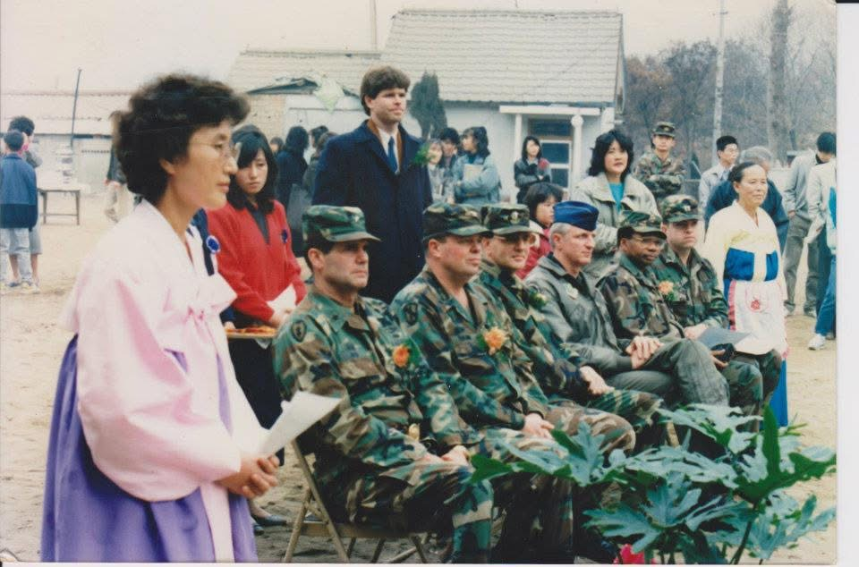
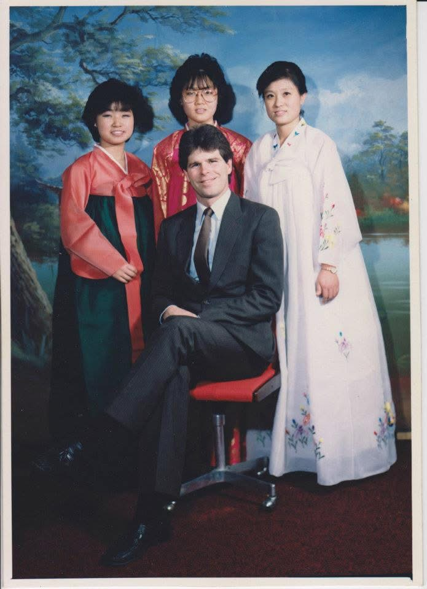

1983 · Korea
The Family That Took Him In
The retired one-star general's family who housed Bill during language school.

1984 · Korea
Escort Twins: Robin and Rachel
Robin and Rachel (adopted twins) with their older Korean sister.

1985 · Korea
Planting Rice for the Children
Barefoot in the paddy — the orphanage rice field that fed the children.

Chuseok 1985 · Korea
Chuseok at the Orphanage
Bill in hanbok at Hwarang Children's Home — celebrating Chuseok, Korea's harvest Thanksgiving.

1986 · Korea
Agape Baptist Church
Rev. Chung and his wife — the church plant where Bill served as volunteer youth pastor.

1986 · Korea
The Ensemble — 4 Members
Four members now. Jakyung is next to Bill — she had entered the story.

1987 · Korea
Sungshin Children's Home
Ceremony at Sungshin Children's Home — Colonel Ray Shaw (2nd uniformed soldier).

1987 · Korea
The Ensemble — 3 Members
The singing ensemble — three members remaining. Jakyung is on the left.